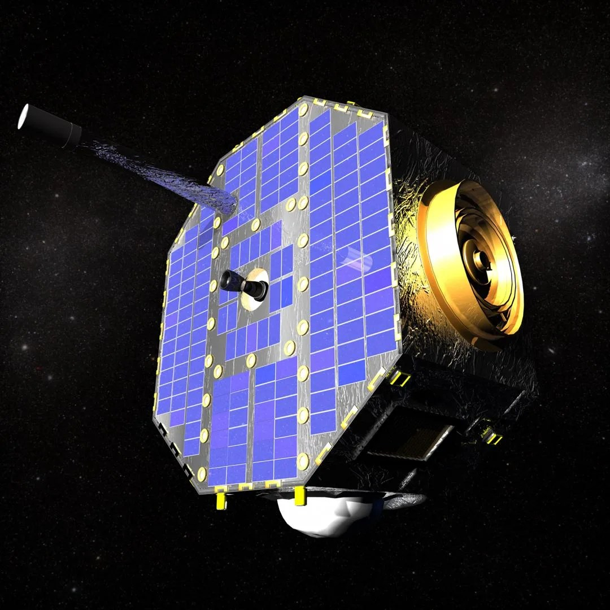

Predictions of IPH Maps Using Machine Learning
Developed a 28-Layer Residual Neural Network to predict Hydrogen Lyman-Alpha intensities within the Earth's exosphere.
A selection of work across heliophysics, spectroscopy, embedded systems, and creative tech.
Developed a 28-Layer Residual Neural Network to predict Hydrogen Lyman-Alpha intensities within the Earth's exosphere.
Developed paper on using mid-IR spectroscopy to analyze interactions between biological tissues and chiral drugs.
Built a 2D LiDAR mapping system on LattePanda using Ubuntu and ROS for real-time visualization.

Founded and led an organization promoting gender equity in research—workshops and info sessions connecting women to research opportunities.